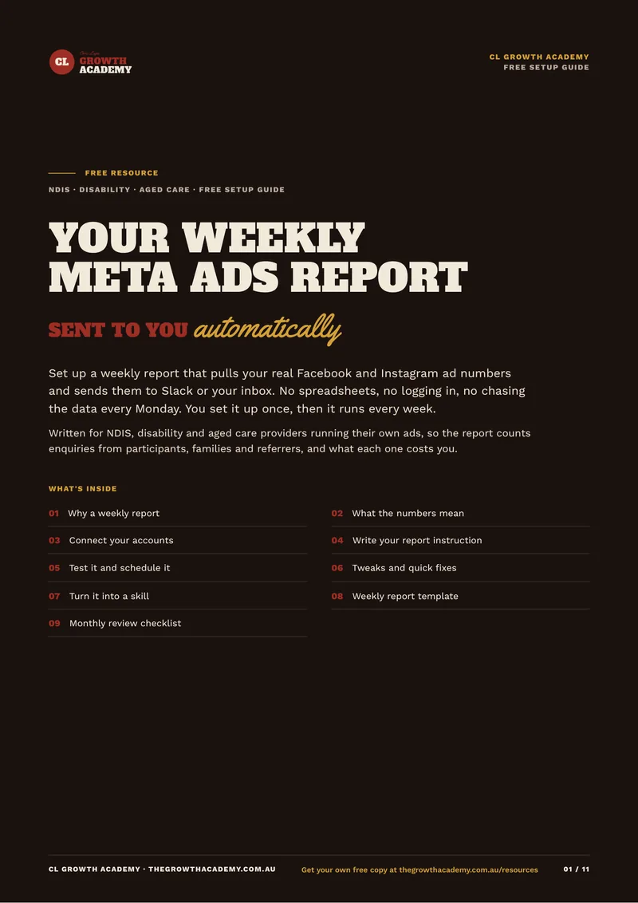
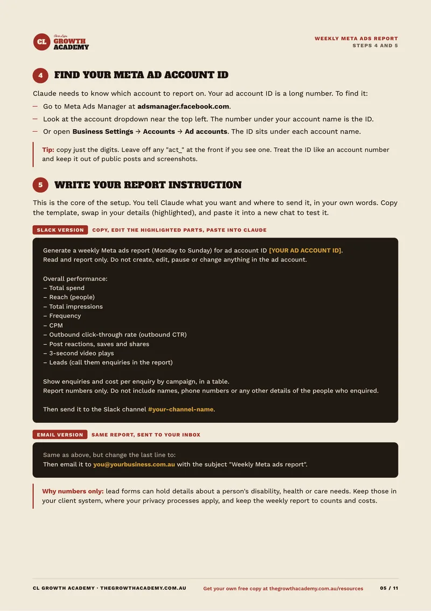

Facebook Ads Report: Set Up a Weekly Meta Ads Report in 7 Steps
A weekly Meta ads report puts your spend, enquiries and cost per enquiry in front of you every Monday, sent to Slack or email. This free guide shows NDIS, disability and aged care providers how to set one up with Claude and Meta's connector in 7 steps. No code, no spreadsheets, and it reads your numbers without changing your ads.
Meta's connector can read your results, and it can also create, edit and pause ads and change budgets when asked. A report only needs to read. Every instruction in this guide tells Claude to read and report only, and to change nothing. You can disconnect it any time from the Connectors screen.

How do I get a weekly Facebook ads report emailed to me?
Short answer: Meta can do it for free. In Ads Reporting, open a saved report, turn on Schedule email, add who gets it and save. That sends the same report every week. The Claude version in this guide adds enquiries and cost per enquiry by campaign, a written summary with one action, and Slack.
Meta's own scheduled email, step by step:
- Open Ads Reporting in Ads Manager (under Analyze and report in the top menu) and click Reports.
- Open the report you want to send each week.
- Click the link under the report name, or the cog icon at the top right, depending on your version.
- Turn on Schedule email, add the people who get it and click Apply.
- Click Save.
Two limits worth knowing. A scheduled email works for one ad account per report, because Meta can't schedule cross-account reports. And only people with access to the ad account can open the report. To send it to someone without access, export it and send the file.
What the Claude version adds:
- Enquiries as the main number. Claude reports Meta's results as enquiries, with cost per enquiry in a table for every campaign.
- A written read of the week: a two-sentence summary, a flag on rising costs, and one takeaway and one action.
- Delivery to a Slack channel as well as email, so your team sees it without logging in to Meta.
- A comparison with last week and a breakdown by location, if you add those lines.
If Meta's own email is enough for you, use it. If you want the numbers read for you every Monday, use the guide.
What does the weekly Meta ads report show?
The same numbers every Monday, pulled straight from Meta with no manual entry:
- Total spend, people reached, impressions, frequency and CPM.
- Outbound click-through rate.
- Post reactions, saves, shares and 3-second video plays.
- Total enquiries, plus a table of enquiries and cost per enquiry for every campaign.
Meta calls an enquiry a "lead" or a "result". In the report it is an enquiry: a participant, family member, carer, support coordinator or other referrer getting in touch about your service.
The report gives numbers only. It leaves out names, phone numbers and any other details of the people who enquired, because lead forms can hold details about a person's disability, health or care needs. Those stay in your client system, where your privacy processes apply.
What do the numbers mean for a provider?
| Number | What it tells you |
|---|---|
| Spend | Check it matches the budget you set. A jump with no change from you is worth a look. |
| Reach | Your audience in your service area is finite, so reach slows as the same people see you again. |
| Frequency | When it keeps climbing and enquiries drop, the audience has seen the ad enough. Time for new creative. |
| CPM | What attention costs. A rising CPM pushes up your cost per enquiry even when the ad is working. |
| Outbound click-through rate | A low outbound click-through rate points to the ad itself: the image, the first line or the offer. |
| Enquiries | Your main number. Count how many came from participants, families, carers and referrers. |
| Cost per enquiry | Spend divided by enquiries. Compare it with what a new client is worth to you over their whole time with your service. |
| Saves and shares | On an NDIS or aged care ad, these often mean someone is passing it to a family member or carer. |
A Meta enquiry is a starting point. Meta counts form submissions, and it can't see someone who saw your ad and then phoned. New clients show up in your own records. As I put it to a client: "CPL doesn't matter if they're not converting." Keep a count of how many enquiries became an intake call, a service agreement or a new client.
How do I set up an automated weekly Facebook ads report?
Seven steps. You connect two accounts, write one instruction and schedule it.
- Open Claude and go to Connectors. It sits under Settings or Customize, and some versions call it Apps.
- Connect your Meta ad account. Log in with the Facebook profile that has access to the ad account, approve the permissions, and select only the business portfolios you want Claude to see.
- Connect Slack, or plan to use email. Pick or create the channel the report goes to, for example #ad-reports.
- Find your Meta ad account ID. It is the long number under your account name in Ads Manager. Treat it like an account number and keep it out of public posts and screenshots.
- Write your report instruction. Copy the template from the guide, swap in your details and paste it into a new Claude chat.
- Run it once to test. Check the numbers match Ads Manager for the same dates, the report landed in the right place, and the campaign table looks the way you want.
- Set it to run every week. Turn the tested instruction into a scheduled task that repeats weekly. Monday morning works well, because the full previous week is complete.
Menu names change. If a step looks different, look for the closest match: connect your accounts, write the instruction, schedule it weekly.
What goes in a weekly Facebook ads report template?
One line a week, the same columns every Monday. Over a quarter it shows you the trend, which one week can't. The full guide has the printable template.
| Week ending | Spend | Enquiries | Cost per enquiry | Outbound click-through rate | Frequency | Notes | Next action |
|---|---|---|---|---|---|---|---|
| (Sunday's date) | Total spend | Meta's results count for your lead campaigns | Spend divided by enquiries | Outbound clicks divided by impressions | Average times each person saw your ads | What changed this week, and how many enquiries became an intake call | One thing you'll do this week |
A worked example week (example figures)
These are example figures for illustration. No provider's real results appear on this page.
- Spend: $600.
- Enquiries: 12.
- Cost per enquiry: $600 divided by 12 enquiries is $50.
- In your own records, 4 of the 12 became an intake call. $600 divided by 4 is $150 per intake call.
- Note: "New creative went live on Tuesday. Frequency is climbing on the older ad."
- Next action: "Pause the older ad and move its budget to the new one."
The $150 per intake call is the number Meta can't show you, because it only sees the form, never the phone call that follows.
What does the report instruction look like?
Here is the opening of the Slack version from the guide. You write it in your own words, and the guide has the full version plus an email version.
Generate a weekly Meta ads report (Monday to Sunday) for ad account ID (your ad account ID).
Read and report only. Do not create, edit, pause or change anything in the ad account.
Show enquiries and cost per enquiry by campaign, in a table.
Report numbers only. Do not include names, phone numbers or any other details of the people who enquired.

The guide also covers:
- Four extra lines to add:
- Compare to last week.
- A two-sentence summary.
- A flag for rising costs.
- A breakdown by location.
- Quick fixes for "it can't find my account", "the report didn't post to Slack", "the numbers look off" and "enquiries don't match my inbox".
- Turning the instruction into a reusable Claude skill with analysis rules: flag any campaign over your cost per enquiry limit, name the best and worst campaign, and finish with one takeaway and one action for the week.
- A one-line-a-week report template you can print or copy into a sheet.
- An 11-point monthly review, including checks on lead form questions, NDIS claims in your ads and written consent for every participant photo.
If you'd rather have someone run and read your ads for you, see how I run social ads for NDIS providers.
What do I need before I start?
- A paid Claude plan. Scheduled tasks are on the paid plans (Pro, Max, Team and above). On a Team or Enterprise plan, the account owner adds a new connector before anyone else can use it.
- Access to your Meta ad account, as an admin or with access to view its performance.
- Somewhere to send it: a Slack workspace you can post to, an email address, or both.
- Your Meta ad account ID.
Who is this guide for?
NDIS, disability and aged care providers running their own Facebook and Instagram ads. Send the report to the person who runs your ads, your intake team so a busy week doesn't catch them short, and your CEO or practice manager if they want the numbers without logging in to Meta.
Get the Weekly Meta Ads Report guide free
You get the full 11-page guide, with the copy-and-paste instruction, the weekly template and the monthly review, plus every other resource in the library.
FAQ
Do I need to write code?
No. You connect two accounts and write one instruction in your own words.
Can Claude change my ads?
Meta's connector can make changes when asked, so every instruction in the guide tells Claude to read and report only. You can disconnect the connector any time from the Connectors screen.
Which Claude plan do I need?
A paid plan. Scheduled tasks are on Pro, Max, Team and above.
Why don't the enquiries match my inbox?
Meta counts what its tracking sees. Phone calls and emails that came after someone saw an ad won't show up, so compare against your own enquiry records and write the gap in your weekly template.
Can I report on more than one ad account?
Yes. Create one scheduled task per ad account, each with its own ad account ID and its own Slack channel or email subject. Meta's own scheduled email also works one ad account at a time.
Can Meta email the report to someone without ad account access?
No. Only people with access to the ad account can open a scheduled report. To share it with someone else, export the report from Ads Reporting and send them the file.
Want help with the numbers?
A report tells you the score. Book a free growth audit and I'll go through your business with you, pick the first three moves, then you decide whether you want help running them.
Sources
- Run a recurring report and send it to different email addresses in Meta Ads Reporting (opens in a new tab), Meta Business Help Center, checked 15 November 2026
The worked example uses example figures. The setup steps, the instruction and the template are CL Growth Academy's own.